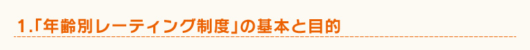

最初に、CEROというのはどういう団体なのでしょうか。
渡邊
「特定非営利活動法人コンピュータエンターテインメントレーティング機構」と申しまして、2002年の6月に発足しました。家庭用ゲームソフトに含まれる表現や内容について審査を行い、そのソフトの対象年齢等を表示する「年齢別レーティング制度」を運営しております。
年齢別レーティング制度の基本的な部分や、目的などをお教えいただければと。
渡邊
私どもが審査を行いまして、ゲームをAからDまで、それぞれA（全年齢対象）、B（12歳以上対象）、C（15歳以上対象）、D（17歳以上対象）という4つの区分に分けております。これはそのゲームの対象年齢を購入される前にお客様にお知らせして、適切な選択をしていただくというのが目的です。誤解されやすいのですが、あくまでもユーザーさんや流通に対する情報提供でして、何かを規制しようとするものではありません。
また、18歳以上のみ対象とされるZ区分がありますが。
渡邊
はい、その通りです。ただ、オンラインゲームなどではパッケージソフトと違って、ユーザーさんがあとから手を加えたりすることができる場合があります。そこはわれわれも関知できませんので、メーカーから最初に提供されるゲームの内容について審査し、区分を決めています。
あと、このレーティングはゲームの表現を審査したもので、ゲームの難易度を表したものではないということで。
渡邊
時々間違えられてしまうことがあるんですよね。パッケージに印刷されているCEROレーティングマークをご覧になって、「全年齢対象と書いてあるのに、ゲーム中に漢字がいっぱい出てきて小学校低学年の子供では遊べない。全年齢とは言えないんじゃないか」というようなご意見をいただきます。われわれも、これはあくまで倫理上の審査なんだということをアピールしていかなければと考えていますので、このようにご紹介いただけるのはありがたいです。